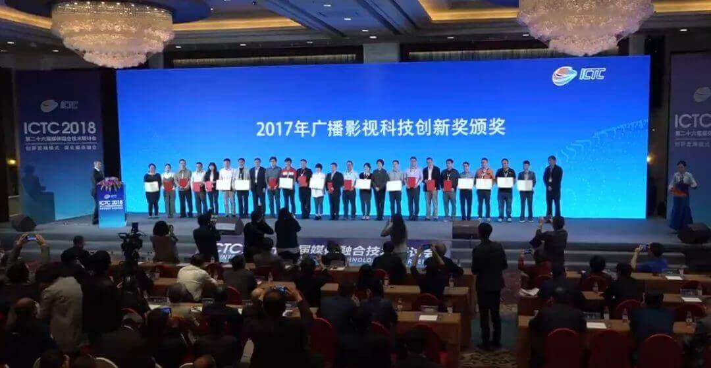
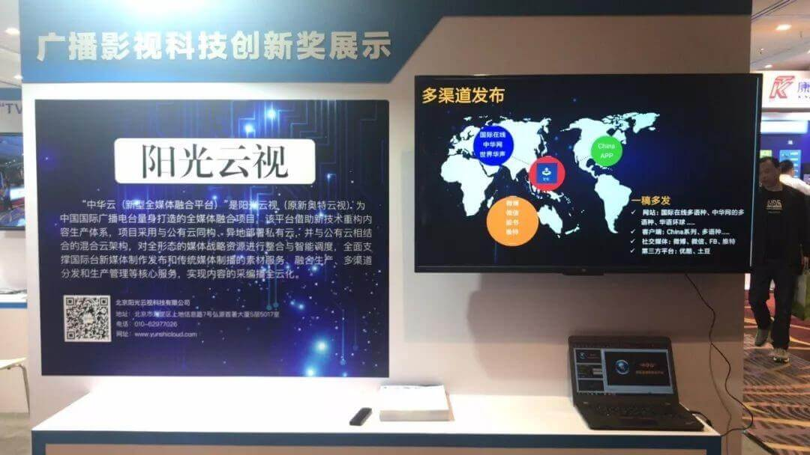
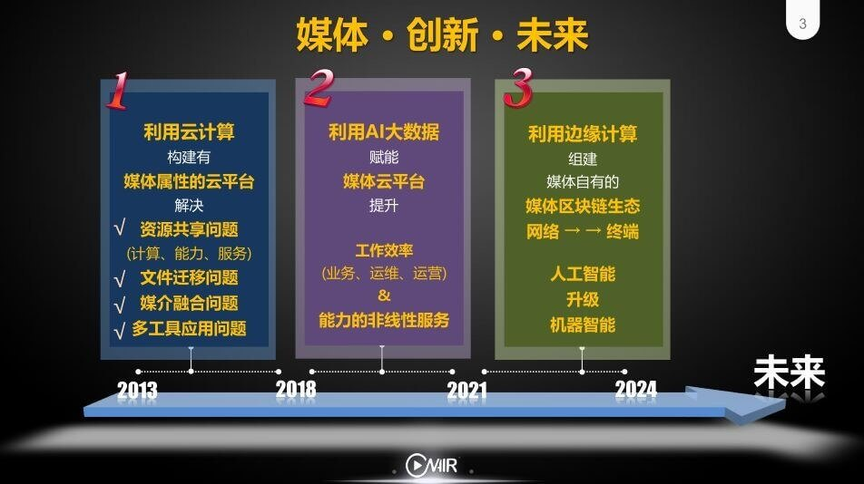

阳光云视亮相ICTC2018分享实践干货，聚焦广电行业创新发展
金秋送爽，丹桂飘香。10月24日-10月27日，第二十六届媒体融合技术研讨会（ICTC2018）如约而至。ICTC2018的主会场设在杭州黄龙饭店，会议以“创新发展模式，深化媒体融合”为主题，围绕智慧广电、媒体融合、智能媒体与大数据等多方面进行深入探讨。

ICTC大会现场举行了“2017年广播影视科技创新奖颁奖”，其中由阳光云视承建的“中华云（新型全媒体融合平台）”项目和“七彩云”融合媒体云平台项目 ，两个项目均荣获一等奖。
中华云（新型全媒体融合平台）项目
“中华云（新型全媒体融合平台）”是阳光云视为中国国际广播电台量身打造的全媒体融合项目，该平台借助新技术重构内容生产体系，项目采用与公有云同构、异地部署私有云，并与公有云相结合的混合云架构，对全形态的媒体战略资源进行整合与智能调度，全面支撑国际台新媒体制作发布和传统媒体制播的素材服务、融合生产、多渠道分发和生产管理等核心服务，实现内容的采编播全云化。
“七彩云”融合媒体云平台项目
“七彩云”融合媒体云平台项目中，阳光云视主要为该项目提供非新闻节目生产PaaS平台的集成，打通私有云和专属云，提供用户管理、生产加工、数据分析等一系列服务，同时具备服务（包括第三方生产工具）的快速注册和统一的标准化应用开发接口能力，更好为合作伙伴和开发者提供音视频生产加工、管理发布等精细化的运营管理服务。为广电敏捷生产和新业务的弹性部署提供有力支撑，助力云南台媒体融合创新业务的快速发展。

作为广播影视科技创新奖一等奖获得者，阳光云视在展位展出了最新的ONAIR PAAS 2.0版本：通过API网关，助力能力建设和平台开放；引入AI智能服务，助力媒体智能化发展；建立平台自动化运维监控，提供基础资源监控、应用性能监控和自动化运维监控，保障平台稳定性。秉承初心，不断创新，助力传媒行业用户实现“采、编、发、存”的业务流程云化改造，有效支撑媒体融合创新业务的快速发展。
阳光云视副总经理舒文琦受邀在主题报告会上发表以“创新引领，战略致胜——边缘计算在广电行业的应用与探索” 为主题的演讲。

相对于云计算来说，边缘计算指的是将计算过程分散到各个节点自行完成，通过收集并分析数据的行为发生，在靠近数据生成的本地网络中进行处理，而非必须将数据传输到就散资源集中化的云端进行处理。对于广电业务来说，采取边缘计算可以节省大量的计算资源和存储资源，无需将数据传输至公有云即可处理数据，提高了敏感数据的安全性，以快速响应新闻资源的实时性。
加速智慧广电建设，促进融合媒体发展，云视一直在路上，坚持技术创新，实现视频生产能力的变革，让视频应用更轻松！
创新，不是所做的改造，而是坚持不懈的态度；
领先，不是所站的位置，而是不断进取的决心；